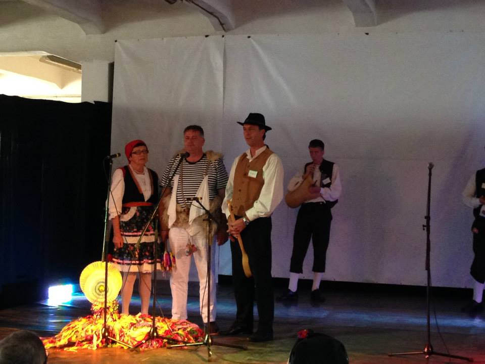
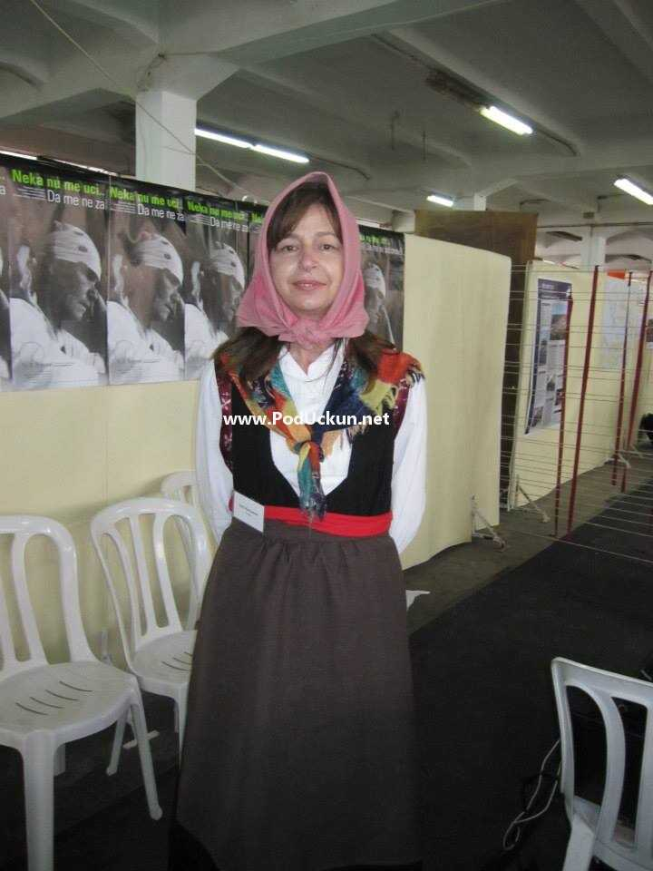
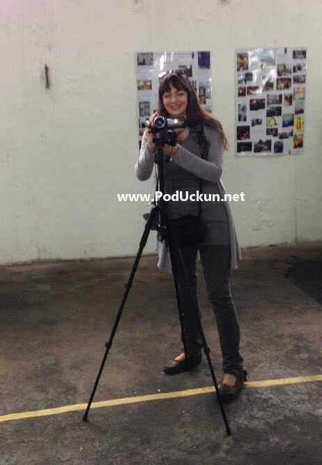
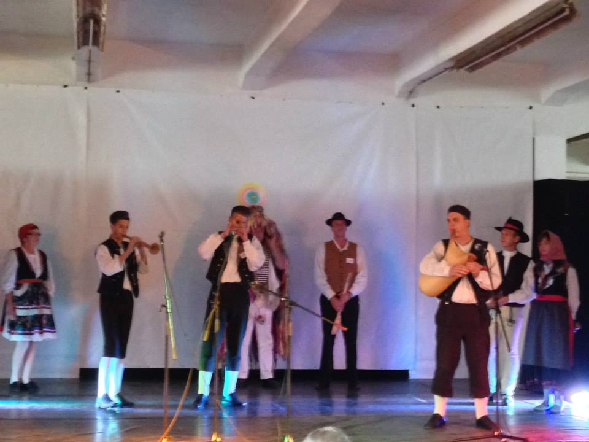
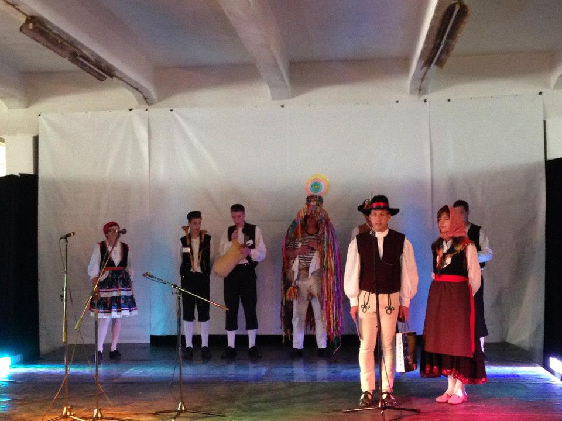
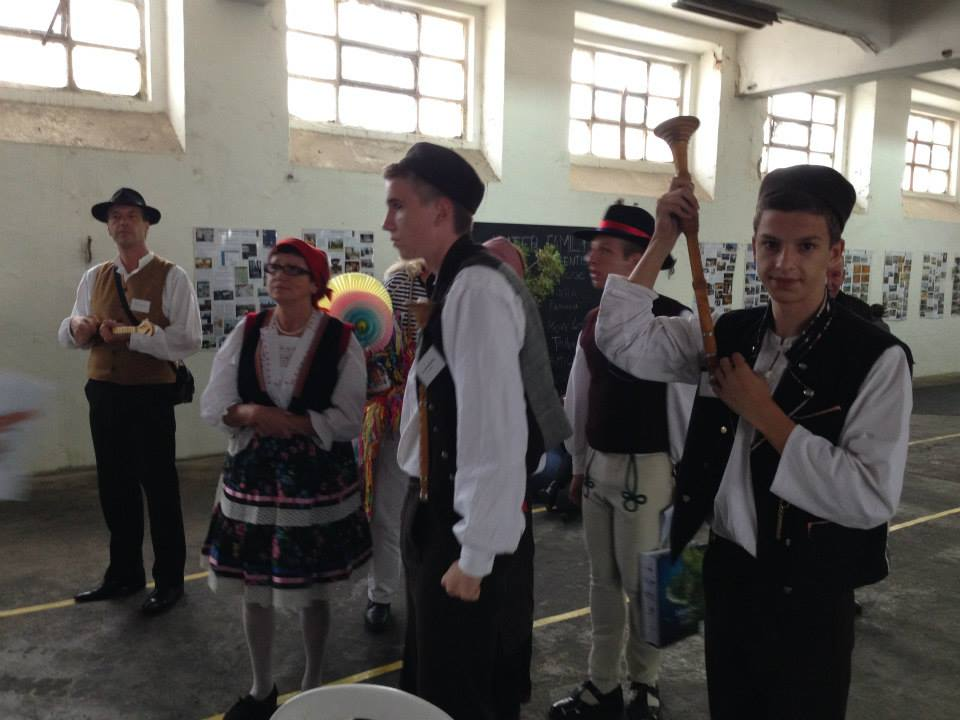

Sudjelovanjem na sajmu te promocijom vlaškog i žejanskog jezika i drugih elemenata tradicijske baštine posredno se promovirala regija, ali i Hrvatska uopće, budući da su vlaški i žejanski jezik uvršteni na Listu zaštićenih nematerijalnih kulturnih dobara Republike Hrvatske.
Žejane – U portugalskom gradu Alcanena 17. i 18. listopada ove godine održao se znanstveni skup ‘International Conference on Endangered Languages in Europe’ [Međunarodna konferencija o ugroženim jezicima Europe]. Na skupu, čiji je osnovni cilj bio razmjena ideja i tehnika dokumentacije, arhiviranja i revitalizacije ugroženih europskih jezika te pitanja budućih istraživanja jezične raznolikosti Europe, okupilo se više od 70 stručnjaka iz Europe, Australije i Sjeverne Amerike.

Na skupu su predstavljena i dva rada koja su tematizirala ugrožene jezike u Hrvatskoj: Multilingualism and language interference in Arbanasi Albanian [Multilingvizam i jezična interferencija u arbanaškom] te Identity and language shift among Vlashki/Zheyanski-speaking Istrians in Croatia [Identitet i gubljenje jezika među Istranima – govornicima vlaškog i žejanskog jezika]. Izlaganje na temu vlaškog i žejanskog jezika prof. dr. Johna Singlera i dr. sc. Zvjezdane Vrzić sa Sveučilišta u New Yorku rezultat je istraživanja provedenog u sklopu projekta "Documentation of the Vlashki/Zheyanski Language" [Dokumentacija vlaškog/žejanskog jezika], financiranog od strane Nacionalne zaklade za znanost Sjedinjenih Američkih Država.
 U sklopu znanstvenog skupa u susjednom se mjestu Mindeu u subotu, 19. listopada, održao ‘The Language Fair’ [Sajam jezika], društveno–kulturni događaj čiji je cilj bio predstaviti jezičnu raznolikost Europe, osobito europske ugrožene jezike. Na spomenutom je događaju predstavljen vlaški i žejanski jezik. Članice Udruge "Spod Učke" iz Nove Vasi, Općina Kršan, Viviana Brkarić i Marina Mikuluš te Robert Doričić, predsjednik Udruge "Žejane" iz Žejana, Općina Matulji, na štandu su predstavili vlaški i žejanski jezik kroz dosad ostvarene aktivnosti i publikacije projekta "Očuvanje vlaškog i žejanskog jezika": mrežne stranice projekta www.vlaski-zejanski.com, jezični program za učenje vlaškog i žejanskog jezika "Limba de saka zi" [Svakodnevni jezik], katalog izložbe starih fotografija "Neka nu me uci" [Da me ne zaboraviš], nosač zvuka i knjižicu za učenje vlaškog jezika za djecu i roditelje "Viro ku mire" [Dođi sa mnom] te druge publikacije. Na štandu je, putem promotivnog materijala, predstavljena regija iz koje dolaze govornici vlaškog i žejanskog jezika. U kulturnom programu sajma, u kojemu je sudjelovalo desetak skupina izvođača iz cijele Europe, predstavljeni su segmenti očuvane tradicije selâ u kojima se govore vlaški jezik i žejanski jezik: dvoglasje tijesnih intervala Istre u izvedbi članova Kulturnog umjetničkog društva "Ivan Fonović Zlatela" iz Kršana Noela Šurana, Dalena Načinovića i Vilijama Vojića i članova "Žejanskih kntadura", glazbene sekcije Folklornog društva "Žejanski zvončari" iz Žejana Igora Doričića, Ivanke Sonje Doričić-Bačić i Maura Doričića. Zajednički nastup zanimljive koreografije ovih dviju folklornih skupina koji je uključivao i nastup žejanskog zvončara, ostao je zapažen od organizatora i posjetitelja sajma.
Viviana Brkarić, predsjednica Udruge "Spod Učke" i, uz Roberta Doričića, suorganizatorica odlaska u Portugal izjavila je: ‘Na ´Sajmu jezika´ imali smo priliku prikazati dio naše bogate tradicije, prvenstveno vlaški i žejanski jezik, ali također i kraj odakle smo došli. Bilo je to posebno iskustvo koje će, vjerujem, ostati u lijepom sjećanju svima nama koji smo na sajmu sudjelovali. Na sajmu su ostvareni kontakti koji će, nadam se, dovesti do budućih suradnji i predstavljanja vlaškog i žejanskog jezika izvan domovine.’
 U sklopu znanstvenog skupa u susjednom se mjestu Mindeu u subotu, 19. listopada, održao "The Language Fair" [Sajam jezika], društveno–kulturni događaj čiji je cilj bio predstaviti jezičnu raznolikost Europe, osobito europske ugrožene jezike. Na spomenutom je događaju predstavljen vlaški i žejanski jezik. Članice Udruge "Spod Učke" iz Nove Vasi, Općina Kršan, Viviana Brkarić i Marina Mikuluš te Robert Doričić, predsjednik Udruge "Žejane" iz Žejana, Općina Matulji, na štandu su predstavili vlaški i žejanski jezik kroz dosad ostvarene aktivnosti i publikacije projekta "Očuvanje vlaškog i žejanskog jezika": mrežne stranice projekta www.vlaski-zejanski.com, jezični program za učenje vlaškog i žejanskog jezika "Limba de saka zi" [Svakodnevni jezik], katalog izložbe starih fotografija "Neka nu me uci" [Da me ne zaboraviš], nosač zvuka i knjižicu za učenje vlaškog jezika za djecu i roditelje "Viro ku mire" [Dođi sa mnom] te druge publikacije. Na štandu je, putem promotivnog materijala, predstavljena regija iz koje dolaze govornici vlaškog i žejanskog jezika. U kulturnom programu sajma, u kojemu je sudjelovalo desetak skupina izvođača iz cijele Europe, predstavljeni su segmenti očuvane tradicije selâ u kojima se govore vlaški jezik i žejanski jezik: dvoglasje tijesnih intervala Istre u izvedbi članova Kulturnog umjetničkog društva "Ivan Fonović Zlatela" iz Kršana Noela Šurana, Dalena Načinovića i Vilijama Vojića i članova "Žejanskih kntadura", glazbene sekcije Folklornog društva "Žejanski zvončari" iz Žejana Igora Doričića, Ivanke Sonje Doričić-Bačić i Maura Doričića. Zajednički nastup zanimljive koreografije ovih dviju folklornih skupina koji je uključivao i nastup žejanskog zvončara, ostao je zapažen od organizatora i posjetitelja sajma.
Sudjelovanjem na sajmu te promocijom vlaškog i žejanskog jezika i drugih elemenata tradicijske baštine posredno se promovirala regija, ali i Hrvatska uopće, budući da su vlaški i žejanski jezik uvršteni na Listu zaštićenih nematerijalnih kulturnih dobara Republike Hrvatske. Osim toga, na ‘Sajmu jezika’ su istovremeno predstavljena dva hrvatska elementa upisana na UNESCO-ovu Reprezentativnu listu svjetske nematerijalne kulturne baštine: dvoglasje tijesnih intervala Istre te godišnji pokladni ophod zvončara.
Sponzori gostovanja na ‘Sajmu jezika’ u Portugalu kojima se ovom prilikom organizatori posebno zahvaljuju bili su Ministarstvo kulture Republike Hrvatske, Primorsko-goranska županija, Istarska županija, Općina Matulji i Općina Kršan.



Robert Doričić
November 3, 2013
© 2013 Liburnija